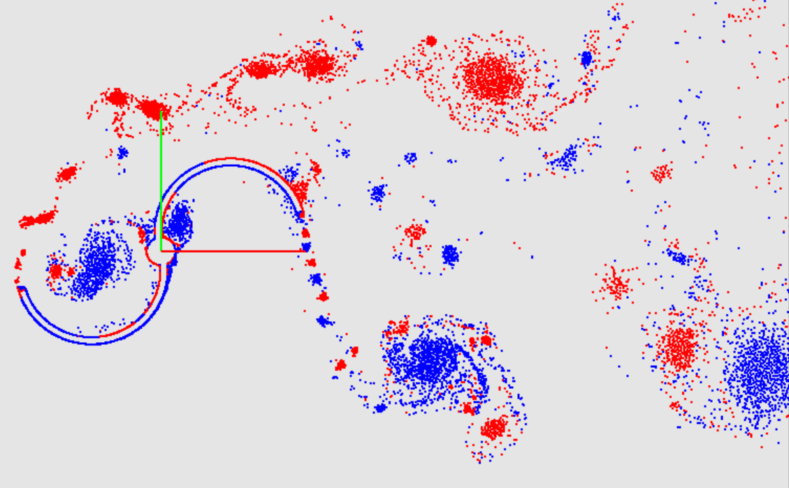
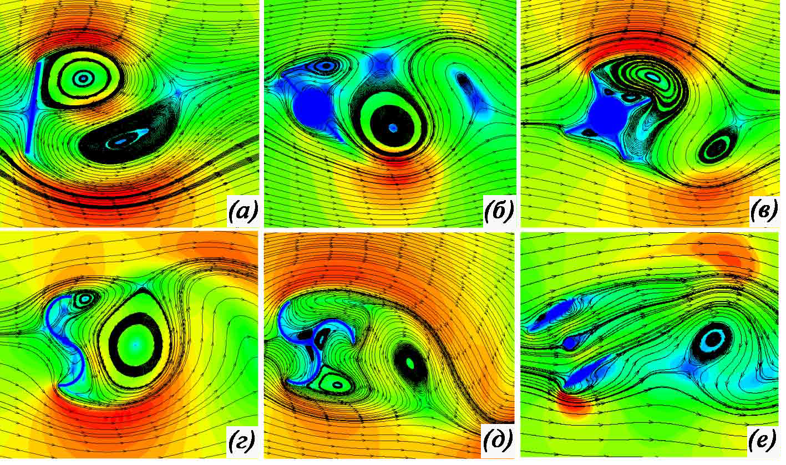
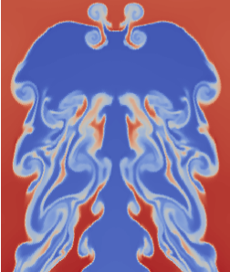

В рамках проекта ведутся исследования в области дальнейшего совершенствования и анализа эффективности современных методов вычислительной аэрогидродинамики, не реализованных в известных на сегодня российских и зарубежных программных комплексах. Выполняется их программная реализация в виде полнофункциональных прототипов программ, адаптированных для проведения расчетов на современных многопроцессорных ЭВМ кластерного типа. Рассматриваемые методы представляются эффективными и актуальными для следующих направлений.
| № | Метод | Краткое описание |
|---|---|---|
| 1. |  | Вихревые методы – задачи аэрогидродинамики и сопряженные задачи аэрогидроупругости в рамках допущения о несжимаемости среды, возникающие непосредственно в аэрокосмическом машиностроении (расчет нагрузок, действующих на летательные аппараты), расчете нагрузок, действующих на подводные конструкции, в том числе свободно перемещающиеся и буксируемые, а также в других отраслях: энергомашиностроении (расчет колебаний трубок теплообменников энергетических установок при их обтекании теплоносителем), механике конструкций, зданий и сооружений (расчет течений; решении сопряженных задач в промышленной аэродинамике, задач оценки экологической обстановки и т.п.). |
| 2. |  | Методы погруженных границ – расчет на неподвижной структурированной сетке течений, включая высокорейнольдсовые, с привлечением известных RANS, LES и DES-моделей турбулентности, при наличии в них подвижных обтекаемых поверхностей, совершающих произвольные большие перемещения, в том числе деформируемых и вращающихся; помимо основного направления исследований (расчета нестационарных нагрузок при аэрогидробаллистическом проектировании летательных аппаратов) данные методы особенно эффективны, в частности, при расчете вращающихся вертушек, ветроэнергоустановок, многокомпонентных обтекаемых конструкций (пучков труб) при больших перемещениях отдельных компонент и т.п. |
| 3. |  | Разрывный метод Галеркина – моделирование сложных, в том числе содержащих разрывы и неустойчивостей различного происхождения, течений сжимаемых и несжимаемых (слабосжимаемых) сред в рамках эйлерова подхода с обеспечением как высокого порядка аппроксимации решения в областях его гладкости, так и высокой степени разрешения разрывов для моделирования процессов высокоскоростного обтекания и, при необходимости, теплообмена элементов конструкций летательных аппаратов. |
В рамках указанных численных методов исполнителями настоящей заявки разработаны и реализованы новые модификации соответствующих подходов, доказавшие высокую вычислительную эффективность при решении конкретных задач, а также проведены исследования по распараллеливанию вычислений и адаптации алгоритмов для проведения расчетов на многопроцессорных ЭВМ.
Исследование выполняется за счет гранта Российского научного фонда (проект №17-79-20445).